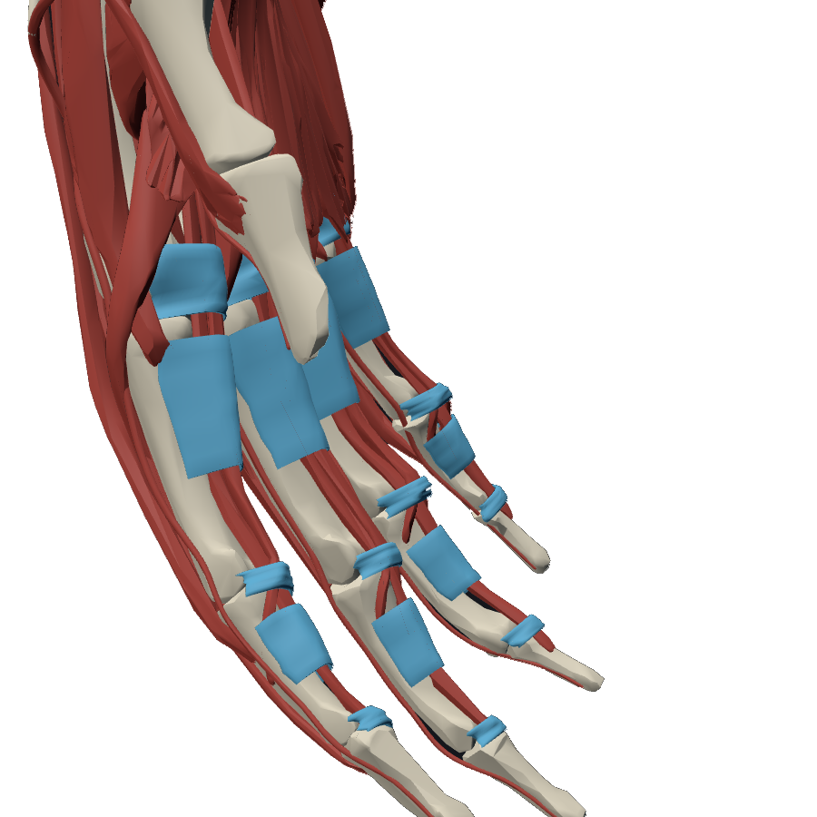

抓握方式
半握
Half crimp
别名半扣 · 90° crimp（示例）

3D（示例）近指间关节约屈 90°、指尖压在岩点边缘的抓法。此段为占位说明，正式内容需对照来源撰写。
已对照来源2026-11-20
在 3D 中查看
缩略图模型：BodyParts3D © DBCLS，CC BY 4.0
这个抓法用到的结构，按角色标注。点一行在 3D 中定位。
- 指深屈肌Flexor digitorum profundus主动肌
- 指浅屈肌Flexor digitorum superficialis主动肌
- 蚓状肌Lumbricals协同肌
- 骨间肌Interossei协同肌
- 腕伸肌群Wrist extensors稳定肌
- A2 滑车A2 pulley受力结构
- A4 滑车A4 pulley受力结构
文献中常与这个抓法一起讨论的部位。只做一般说明，不代表个人情况。